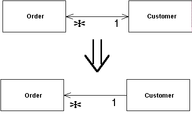

Change Bidirectional Association to Unidirectional
You have a two-way association but one class no longer needs features from the other.
Drop the unneeded end of the association.

For more information see page
200
of Refactoring
| Refactoring Home | | Alphabetical List |